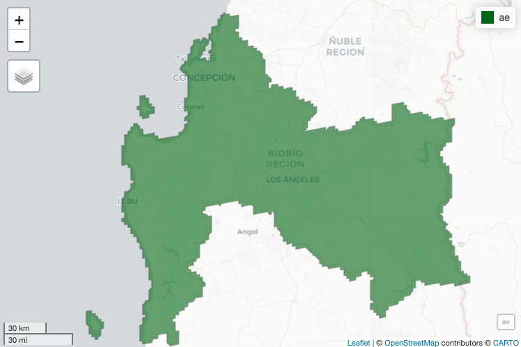
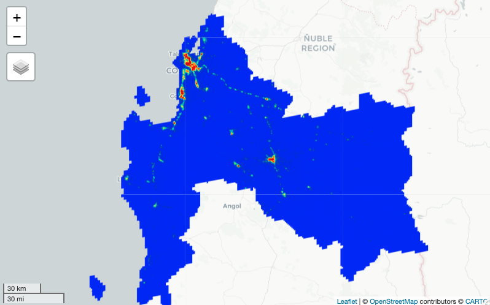
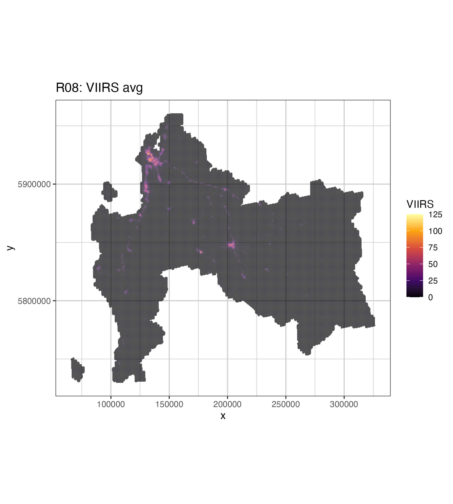

| Name | Units | Min | Max | Description |
|---|---|---|---|---|
| avg_rad | nanoWatts/cm2/sr | -1.5* | 193565* | Average DNB radiance values. |
| cf_cvg | NA | 0* | 84* | Cloud-free coverages; the total number of observations that went into each pixel. This band can be used to identify areas with low numbers of observations where the quality is reduced. |
Appendix A — Cálculo Luminosidad Noc.
Procedimiento de Cálculo a nivel regional
A.1 Objetivos
Construir un insumo satelital correspondiente a reflectancia de las Luces Nocturnas Satelitales desde VIIRS Stray Light Corrected Nighttime Day/Night Band Composites Version 1. Además de construir un indicador territorial que represente la luminosidad nocturna, cuya unidad mínima sea manzana urbana y entidad rural, a nivel país que se denominará “Indicador de Luminosidad Nocturna (ILN).
A.2 Metodología
De forma general se utilizará como base producto satelital llamado VIIRS Stray Light Corrected Nighttime Day/Night Band Composites Version 1, que entrega valores de radiancia media mensual del infrarojo visible, utilizando la plataflorma de GEE para su adquisisción y procesamiento.
Se definirá una región de estudio, para el caso práctico de cálculo corresponde a la región del Bío Bío y año de análisis el 2016 que corresponde al periodo de levantamiento de información del Pre Censo.
Posteriormente se accederá el producto de datos filtrará por año y región de estudio, además se realizarán correcciones y transformaciones que permitan homologar en estructura raster con los demás productos satelitales del proyecto.
Finalmente se procederá extraer el valor de indicador por unidad territorial mínima, manzana urbana y entidad censal, mediante el cáculo del promedio de los valores de pixeles que contiene en su interior, y este valor será el del indicador ILN. Para tener control de flujo de este proceso se rezarará mediante un ciclo interativo por Distrito censal, en caso de caerse la conexión con GEE, se puede continuar en el distrito correcto, sin perder lo avanzado.
A.3 Producto Satelital
- Nombre:
-
VIIRS Stray Light Corrected Nighttime Day/Night Band Composites Version 1
- Disponibilidad (a Mayo 2023):
- 2014-01-01T00:00:00Z–2023-01-01T00:00:00
- Proveedor:
-
Earth Observation Group, Payne Institute for Public Policy, Colorado School of Mines
- Descripción:
-
Imágenes compuestas de radiancia media mensual utilizando datos nocturnos del Visible Infrared Imaging Radiometer Suite (VIIRS) Day/Night Band (DNB).
Como estos datos se componen mensualmente, hay muchas zonas del planeta en las que es imposible obtener una cobertura de datos de buena calidad para ese mes. Esto puede deberse a la nubosidad, especialmente en las regiones tropicales, o a la iluminación solar, como ocurre hacia los polos en sus respectivos meses de verano. Por lo tanto, se recomienda que los usuarios de estos datos utilicen la banda ‘cf_cvg’ y no asuman que un valor de cero en la imagen de radiancia media significa que no se observaron luces.
La cobertura de nubes se determina utilizando el producto VIIRS Cloud Mask (VCM). Además, los datos cercanos a los bordes de la franja no se incluyen en los compuestos (zonas de agregación 29-32). La versión 1 NO ha sido filtrada para separar las luces de la aurora, los incendios, los barcos y otras luces temporales. Esta separación está en desarrollo y se incluirá en una versión posterior de esta serie temporal. También está en desarrollo un método para separar las luces de los valores de fondo (no luces).
Este producto es una configuración alternativa del DNB de VIIRS que utiliza un procedimiento para corregir la luz parásita. El procedimiento de corrección extiende las áreas visibles más cerca de los polos y mejora el rango dinámico. Hay que tener en cuenta que se introducen algunos artefactos debido al procedimiento utilizado en las regiones crepusculares; véase el documento de referencia para más detalles. Este producto excluye los datos afectados por la nubosidad.
- Resolution Espacial:
- 463.83 meters
Bandas:
- Estimated min or max value
A.4 Recursos y parámetros generales
Pimeramente se definen librerías y parámetros generales de uso a lo largo del presente presente:
# Recursos ----------------------------------------------------------------
source("R/fnc_gee.R")
source("R/fnc_grals.R")
# Librerias ---------------------------------------------------------------
library(dplyr)
library(sf)
library(raster)
library(mapview)
library(ggplot2)
library(viridis)# Parámetros --------------------------------------------------------------
year = 2016
n_region = "08"
image_name = 'NOAA/VIIRS/DNB/MONTHLY_V1/VCMSLCFG'
description_d = "VIIRS"
folder_name_d = "ILN"
path_out = "data/tif"
scale_r = 500
scale_r_out = 100
out_name = paste0(path_out, "/R", n_region,"_",
description_d, "_", year, "_",
scale_r_out, ".tif")
layer = "avg_rad"
legend_name = "Indicador de Luces Nocturnas (ILN)"A.4.1 Definición de Área de Estudio
# Región de Estudio -------------------------------------------------------
region_sf <- readRDS("../../insumos/regiones/Regiones_Chile.rds") %>%
filter(REGION == n_region) %>%
st_transform(4326)La región de estudio es geometría única y se le aplicará un buffer (st_buffer()) de 1000 metros, a fin de asegurarnos que no queden partes de polígonos sin cubrir con el raster.
ae <- region_sf %>%
dplyr::select(geometry) %>%
st_buffer(1000)
mapview(ae, col.region = "darkgreen")
A.4.2 Ambiente Google Earth Engine
library(rgee)
email_gee = 'denis.berroeta@gmail.com'
ee_Initialize(email_gee, drive = TRUE)La región de estudio se transforma de formato objeto ee (earth engine) para que pueda interactuar con esa plataforma.
ae_ee <- ae %>% sf_as_ee()A.5 Noise Correction
Ppara eliminar el ruido de calibración y las luces efímeras, tal como se analiza en la literatura pertinente Doll and Pachauri (2010) Min et al. (2013), por lo cual se fijó un límite inferior de ruido en 0.25 \mu W \cdot cm^{-2} \cdot sr^{-1} para 2016.
La discrepancia en los límites de ruido se justifica por el aumento del ruido de los datos obtenidos a partir de 2017. Según la opinión de los expertos, esto se debe a los ajustes de calibración en la corrección lunar y al lanzamiento de un nuevo satélite equipado con VIIRS (JPSS J1) en 2017 (como se analiza en Miller et al. (2018)). La dispersión en el conjunto de límites inferiores de ruido antes y después de 2017 se determinó a partir del examen de píxeles de radiancia cero por definición -como dentro de grandes masas de agua- que, no obstante, presentan una radiancia sistemáticamente positiva para los datos desde 2017, y una radiancia sistemáticamente cero para los datos anteriores.
replacement = ee$Image(0);
conditional = function(image) {
return(image$where(image$lt(0.25), replacement))
}A.6 Producto Satelital
dataset <- ee$ImageCollection(image_name)$
filterDate('2016-10-01', '2016-12-01')$
select("avg_rad")$
map(conditional)$ # aplicació noise correction
median()
imagen <- dataset$clip(ae_ee)palette_viirs = c('0602ff', '235cb1', '307ef3', '269db1', '30c8e2',
'32d3ef', '3ae237','b5e22e', 'd6e21f', 'fff705',
'ffd611', 'ffb613', 'ff8b13', 'ff6e08', 'ff500d',
'ff0000', 'de0101', 'c21301') %>%
paste0("#", .)
vis <- list(min = 0, max = 60,
palette = palette_viirs)region <- ae_ee$geometry()$bounds()Visualización del producto satelital
Map$centerObject(region, zoom = 11)
Map$addLayer(imagen, vis, name = "Nighttime")
A.7 Descarga de Raster
img <- dl_image(image_ee = imagen, roi = region_sf,
year = year, n_region = n_region,
description_d = description_d,
folder_name_d = folder_name_d,
path_out = path_out,
scale_r = scale_r)
raster_viirs <- raster(img$dsn)A.8 Ajuste Resolución
# Ajuste resolución -------------------------------------------------------
# reproject
cp_r <- raster_viirs
crs_utm <- "+proj=utm +zone=19 +south +datum=WGS84 +units=m +no_defs"
if(crs(raster_viirs)@projargs != crs_utm){
cp_r <- projectRaster(raster_viirs, crs = crs_utm)
}
# copia raster
r <- cp_r
res(r) <- scale_r_out
s <- raster::resample(cp_r, r, method = "bilinear")
s <- round(s)
s[s<0] = 0
writeRaster(s, filename = out_name, overwrite=TRUE)
mapview(s, col.regions =palette_viirs)A.9 Visualización de resultados
s <- raster(out_name)
# rastero to df (na omit)
viirs_raw <- raster::as.data.frame(s, xy = TRUE) %>% na.omit()
names(viirs_raw)[3] <- "layer"
viirs_raw$layer <- as.numeric(viirs_raw$layer)
map_lc <- ggplot() +
geom_tile(data = viirs_raw ,
aes(x = x, y = y,
fill = layer)) +
scale_fill_viridis_c(name = "VIIRS",option = "B")+
coord_equal()+
ggtitle(paste0("R08: VIIRS avg") ) +
theme_bw() +
theme(panel.grid.major = element_line(colour = "gray80"),
panel.grid.minor = element_line(colour = "gray80"))
map_lc
ggsave(plot = map_lc,filename = "images/R08_VIIRS_avg_raw.png")